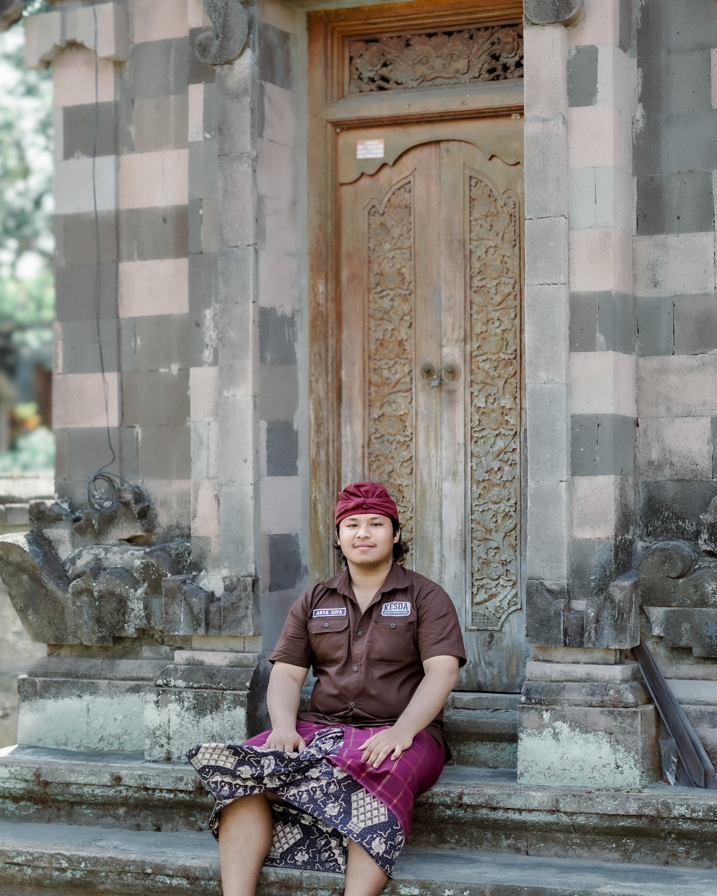

Tentang saya
Nama saya Arya. Sejak kuliah, saya menekuni dua hal yang tampak berbeda tapi bagi saya berjalan beriringan: fotografi dan pengembangan perangkat lunak. Keduanya soal memperhatikan detail — satu lewat cahaya dan komposisi, satu lagi lewat struktur dan logika.
Saat ini saya bekerja sebagai pengembang web, dan di waktu luang saya memotret jalanan, lanskap, dan potret untuk klien lepas maupun proyek pribadi. Halaman ini adalah tempat saya menyimpan keduanya dalam satu ruang.
Keahlian
JavaScript & TypeScript / React & Vue / Node.js / Tailwind CSS / Fotografi potret & lanskap / Pengeditan foto (Lightroom) / Desain antarmuka dasar